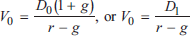
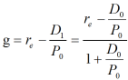
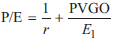
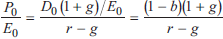
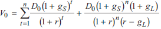
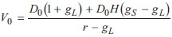
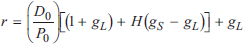
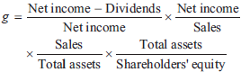

--------------------
PV 模型
--------------------
- 基于未来CF的PV, PVFCF
- 期望现金流
- DDM, discounted dividend model
- DDM适用条件
- 公司有股利支付
- 有股利政策, 使股利与公司利润有稳定关联
- 投资者不是控股方
- FCFF 公司现金流 / FCFE 权益现金流
- FCFF= CFO - 资本支出
- FCFE= FCFF - 债务支付
- FCFF/FCFE 适用条件
- 公司不发股利或相对FCFE很少
- FCFF和公司盈利性一致
- 投资者是控股方
- 留存收益模型适用条件
--------------------
DDM
--------------------
- single holding period / multi holding period
- 成长阶段
- 一个成长阶段 GGM, Gordon growth model

- fixed-rate perpetual preferred stock 永续固定利率优先股
- 股份回购
- 以市价回购的影响是中性的
- 现金股利 vs. 回购
- 公司不保证回购, 但不愿意降低股利
- 现金股利比回购更容易预测
- 出售股份的股东有心理反应
- 隐含的股利成长率

- PVGO, PV of growth opportunities
- 无增长
- 公司没有NPV>0的项目
- 公司所有盈利全部用于分红
- 股权回报率ROE恒定
- PVGO 适用条件
- 假设所有盈利全部用于分红
- 永续经营E1=D0
- E不变, 没有growth value
- V0=E1/r+PVGO
其中E1=第一期earnings
- no-growth value per share = E1/r
其中r是要求回报率
- PVGO = D1/(r-g) - E1/r
- P/E ratio



- 要求回报率的估计
- 两个成长阶段 two-stage growth model
- 成长阶段 growth phase
- supernormal growth, gS
- transition phase
- muture phase, gL
- 二阶段DDM, 假设一阶段末的终值Vn, 同时也是二阶段的初值

- 无股利支付的估值模型
- 假设在下一期支付$x时有g的增长率
则Vn = Dn+1/(r-g)
V0 = Vn/(1+r)n
- 两个成长阶段 H-model
- 成长期采用线性递减的增长率
- 
其中H=第一阶段时间的一半
- 三个成长阶段 three-stage growth model
- 方法一, 列表, 逐期计算
- 方法二, 先计算第二三阶段, 再将结果作为输入计算第一阶段
- 任意DDM要求回报率的估计

--------------------
可持续增长率 SGR
--------------------
- g = b × ROE
其中 b = 收益留存率 = 1-股利支付率
- 在此基础上可以对g进行杜邦分析

--------------------
Next Chaptor